Ahora, un Gemelo Digital
para potenciarlo
Mantenimiento urgente y reactivo de averías críticas con intervenciones de alto impacto en OPEX.
Remodelaciones con sobre costo presupuestal por mano de obra adicional para el cumplimiento de fechas. Afectaciones en alcance, tiempo y costo.
Intervenciones invasivas no previstas con el potencial de ser una sobre carga operativa de alta magnitud por un volumen inesperado de trabajo.
Materiales
Mano de obra
Tiempos
OverallEquipmentEffectiveness
FirstYieldPass
ReturnOfInvestment
Ciclo deconversión deefectivo
Costosoperativos
Al menos15% en gastosde mantenimiento
Colaboración que incrementa la sinergia exponencialmente.
Consolida y organiza toda la información dispersa del portafolio en un solo lugar para las personas indicadas y ven el estado real de la superficie rentable.
Eliminación de procesos fantasma y prevención de pérdida de conocimiento sobre la infraestructura cuando personal clave se jubila porque la información del activo reside en el modelo digital y no solo en la memoria de los operadores
Los operadores que implementan gemelos digitales no solo reducen costos, se convierten en una capacidad que acelera el valor de cada activo gestionado
Crea una experiencia de cliente a empresas de primer nivel que buscan integrarse digitalmente y que tienen estrictos estándares internacionales con lo último en tecnología y con transparencia total desde el primer contacto y que terminan en transacciones con altos puntajes en el CSAT.
Con un gemelo digital ofreces 30% más aprovechamiento de espacio a tus clientes con simuladores de almacén basados en scans de precisión milimétrica y proteges su uptime que mantiene su operación sostenible.
La seguridad que inspira y el valor que agrega un gemelo digital propicia fidelidad y largas relaciones comerciales que activan tu NPS y fortalece el Brand Equity.
Apostamos por la automatización tecnológica para la maximización de valor de los negocios
En Foundtech hemos trabajado con líderes en la industria. Pero lo que nos hace diferentes no es la tecnología. Es que entendemos que un Gemelo Digital para Bexalta no es un proyecto de IT. Es un instrumento de mejora continua.

Estándares de clase mundial en cada punto crítico de creación de Gemelos Digitales con la precisión y velocidad que la Industria 4.0 demanda.
Uso eficiente de la tecnología adecuado a las necesidades de Bexalta. La tecnología sirve al negocio, nunca al revés.
Más de 10 millones de m² modelados en más de 200 proyectos en Europa y América colaborando en industrias clave, y gestión de activos para conservación patrimonial.
Nosotros creemos
Que un futuro
digital, eficiente
y sostenible
para Bexalta
puede comenzar
HOY
COMUNÍCATE